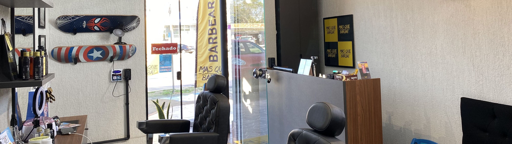

Limpeza de pele
Aqui na MQB temos o melhor custo-benefício de limpeza de pele em Cachoeirinha!
- Iniciamos o trabalho fazendo uma limpeza superficial;
- Colocamos uma toalha quente antes para abrir os poros e potencializar a extração de cravos e impureza;
- Logo após aplicamos o creme esfoliante que vai ajudar a abrir eliminar celulas mortas e impurezas;
- Para ajudar o trabalho do esfoliante utilizamos um aparelho massageador rotativo por todo o rosto do cliente;
- Em seguida retiramos o esfoliante e utilizamos o aparelho de sucção para extração de cravos;
- Aplicamos a máscara de carbono ativado que irá retirar as impurezas em um nível mais profundo da pele;
- Após a retirada da máscara finalizamos a limpeza com uma camada de protetor solar que deixará o cliente protegido no pós-limpeza.
Atendimento completo, né?
Agende já sua limpeza de pele pelo WhatsApp, estamos lhe esperando em frente à prefeitura de Cachoeirinha.